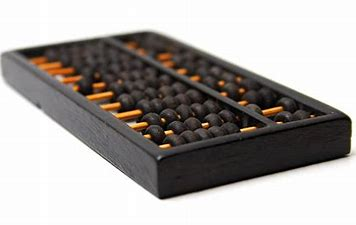

Sobre a Geração "Zero"
Como podemos responder essa operação aritmetica?
Há mais de 1500 anos surgiu o ábaco, um instrumento composto de barras e pequenas bolas, usado pelos mercadores para contar e calcular.
As barras atuavam como colunas que posicionavam as casas decimais; cada bola na barra das unidades valia um, na barra das dezenas valia dez e assim por diante.
O ábaco era tão eficaz que logo se tornou de uso inestimável e se espalhou por todo o mundo.
Antes do século XVII, não existia nada mais eficiente para se efetuar cálculos.
Ainda hoje muitas pessoas gostam de usar esse instrumento e não é difícil achá-los nas lojas de brinquedos ou nas livrarias colegiais.

Na mesma época, alguns pensadores europeus estavam muito empenhados em descobrir técnicas e instrumentos para facilitar as operações aritméticas.
John Napier, um homem misto de teólogo, matemático e desenhista de armas militares mostrou sua vocação mais forte pela matemática e apresentou ao mundo, em 1614, a sua descoberta dos logaritmos. Resumindo, logaritmo é o expoente a que se deve elevar um número constante para se obter outro número.
Já em 1642, um matemático e filósofo francês, chamado Blaise Pascal, construiu uma máquina para somar e subtrair números de oito algarismos.
Essa máquina consistia em rodas e engrenagens na qual o operador introduzia os algarismos a serem somados, acionando uma série de rodas dentadas com algarismos de zero a nove, impressos de modo que os números a serem somados ficassem expostos num mostrador.
Cada roda representava uma determinada coluna decimal: unidade, dezenas, centenas etc.
Ao completar um giro, uma roda avançava em um dígito a roda à sua esquerda, de ordem decimal mais alta. O instrumento também executava, de modo complicado, outras operações.
Essas dificuldades, no entanto, não impediram o sucesso da máquina de Pascal e ele fez mais de cinquenta versões.
Até há pouco mais de vinte anos um modelo mais moderno dessa máquina, ¬porém conservando as mesmas características ainda era usado em escritórios de contabilidade.